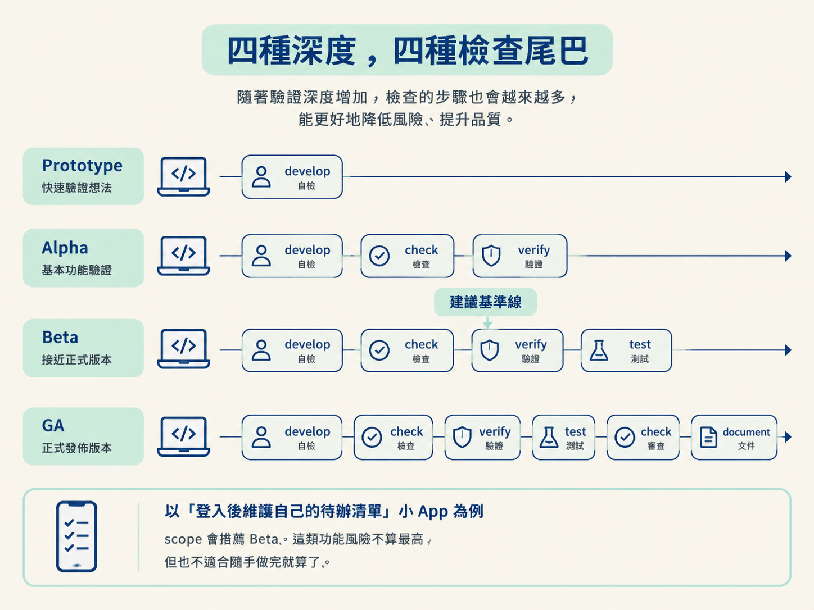
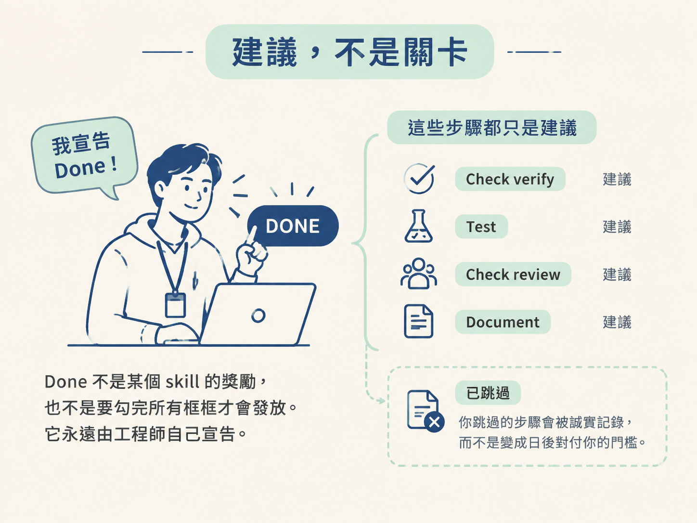

看完這一節，你應該能比較 Prototype、Alpha、Beta、GA 四種驗證深度，知道每一種深度會跑哪些檢查，也能說明為什麼它們是建議而不是關卡。
你還會釐清一個重要原則：無論跑了多少檢查，done 最後都由工程師宣告。
想像兩個極端。
第一個情境是：你週末想試做一個小工具，只改了一個按鈕顏色，卻被要求跑一次獨立模型審查，再補上一整組測試套件。第二個情境則相反：你把付款流程改了一行，卻完全沒有驗證就直接上線。
前者太重，後者太輕。顯然，不是每一種變更都值得相同強度的驗證。
因此，這套流程會讓你在 scope 階段選擇一個驗證深度（workflow depth）。它會決定專案在 /develop 之後，預設要接上多長的檢查流程。
這一節會把四種深度攤開比較。不過先記住一件容易誤會的事：深度是建議，不是把你鎖死的軌道。
驗證深度只調整一件事：/develop 之後，那道「檢查尾巴」有多長。四個選項依強度排列如下。
| 深度 | develop 之後跑什麼 | 適合什麼 |
|---|---|---|
| Prototype | 不額外加入檢查，只依靠 develop 自己的 build time 自檢，例如型別檢查，以及確認畫面能否渲染，再加上你的人工檢視。因為你一開始就選擇跳過獨立驗證，develop 建完並完成自檢後，就會進入 done。 | 丟棄式 prototype、實驗、個人小專案 |
| Alpha | 多跑一次 check 的 verify 模式，直接在實際啟動的應用程式上驗證。驗證通過後進入 done。預設不加入獨立測試套件或第二意見，除非特定功能有這個需要。 | 低風險功能、仍希望有人證明過的內部工具 |
| Beta | 先跑 check verify，再跑 test，最後由 test 為功能收尾。預設不安排 fresh model 的審查。 | 大多數真實產品 |
| GA | 依序跑 check verify、test，再讓另一個模型執行 check review，最後跑一次 document。而且，多數功能會被視為需要 spec。 | 高風險工作、付款、登入、法遵、團隊共用的程式庫 |
以教材中的「登入後維護自己的待辦清單」小 App 為例，scope 會推薦 Beta。這類功能風險不算最高，但也不適合隨手做完就算了。

不過，這個推薦只是基準線。某一個高風險功能，仍然可以單獨選擇更重的驗證路徑。後續階段也會讀取專案的預設值，因此不會對選了 Prototype 或 Alpha 的專案強行套用完整鏈條。
看到 Prototype 只跑 develop，很容易產生一個錯誤印象：選了輕量深度，就可以不寫規格、想怎麼做都行。
不是這樣。
較輕的深度，代表低嚴謹度的功能通常很少需要做重大決定。因此，你自然比較少走到 architect。但如果某個功能確實需要一個決定，那道 gate 仍然會把你送到 architect；或者要求你先把目前的假設記成一份 Assumed spec。
這樣設計的原因很簡單：驗證可以省，決定不能省。
驗證沒跑，最壞的結果是這個功能還沒有被證明。可是，如果決定沒有寫下來，這份知識就可能消失在對話裡，之後沒人知道當初為什麼這樣做。
所以，不論選哪一種深度，流程都會要求你記錄關鍵的、承重的（load-bearing）決定。若功能建立在假設上，就會持續掛著「欠 ratification」的標記，提醒你日後追認。不過，這個標記永遠不會阻止你宣告 done。
整件事最重要的心態是：深度設定的只是「建議你在哪裡收手」，不是一道不能跨過的門。
/develop 之後的每一個步驟——check verify、test、check review、document——都是建議。你可以執行，也可以跳過。
done 也不是某個 skill 扣在手上的獎勵，不是一定要勾完所有框框才會發放。它永遠由工程師自己宣告。你跳過的步驟會被誠實記錄為「已跳過」，而不是變成日後拿來對付你的門檻。

Prototype 的特殊之處在於：你從一開始就選擇放棄獨立驗證。因此，develop 完成建置並完成自檢後，就可以直接進入 done。其他深度則是在告訴你「建議至少先跑到這裡再收手」；要不要照做，仍然由你決定。
驗證深度只決定 /develop 之後那道檢查尾巴的長度：Prototype 只有 develop 自檢，Alpha 加上 check verify，Beta 再加上 test，GA 則再加入 fresh model 的 check review 與 document。深度由 scope 提出建議，也可以由單一功能覆寫；它永遠是建議，不是關卡，而 done 永遠由工程師宣告。輕量深度不等於跳過 architect。驗證可以省，但關鍵決定不能省；若功能建立在假設上，就會被記成 Assumed，持續提醒你日後追認。
到這裡，這個節點的五塊拼圖就齊了：狀態活在四種檔案裡，spec 有嚴格的一生，每個檔案有唯一的主人，驗收條件把決策串到測試，而驗證深度決定這條線要跑多遠。
接下來，你可以回到總覽節點，把這些零件對回九階段流程；也可以直接在練習專案挑一個功能，實際比較不同深度會帶來什麼差別。